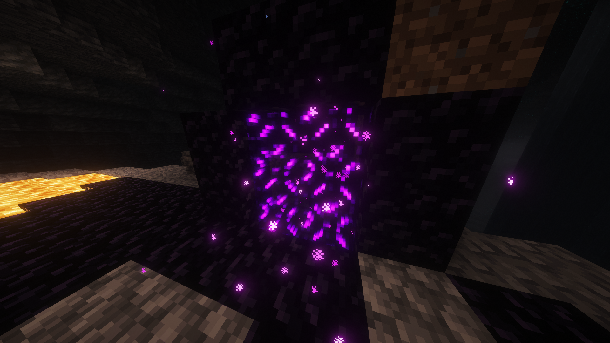

Enhanced Shading
Explore more noticeable shading and depth across the blocks in your world.
MINECRAFT SHADER PROJECT
Meet PerformanceCraft Core — a shader project focused on vibrant visuals, atmospheric shading and a smooth gameplay experience.
Currently available for beta testing.
 >
>
Explore more noticeable shading and depth across the blocks in your world.
Enjoy colourful environments, distinctive ores and atmospheric lighting.
Built with performance in mind, with the goal of keeping gameplay smooth across a range of supported systems.
THE WORLD THROUGH OUR SHADER
Explore the lighting, colours and atmosphere of PerformanceCraft Core.


Interested in testing the shader? Beta information and installation instructions will be provided here.
Latest version: V1.3 for Minecraft 26.3
Render work optimization build — beta release.
Download PerformanceCraft Core V1.3
Made for Minecraft players, by Minecraft players.